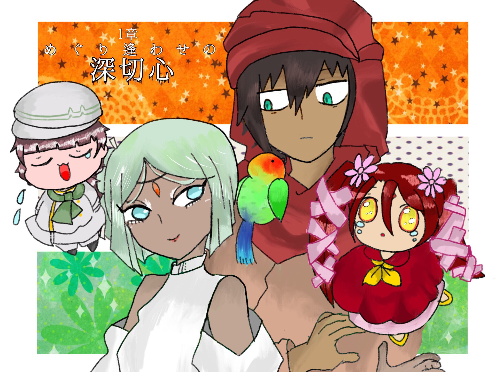
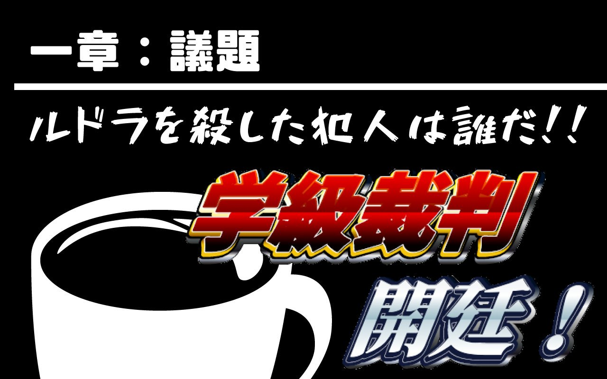
【A-1 提案】カルロ
『あたり』をひいた人物がクロである可能性が高いと思う。全員のメールを確認しよう。
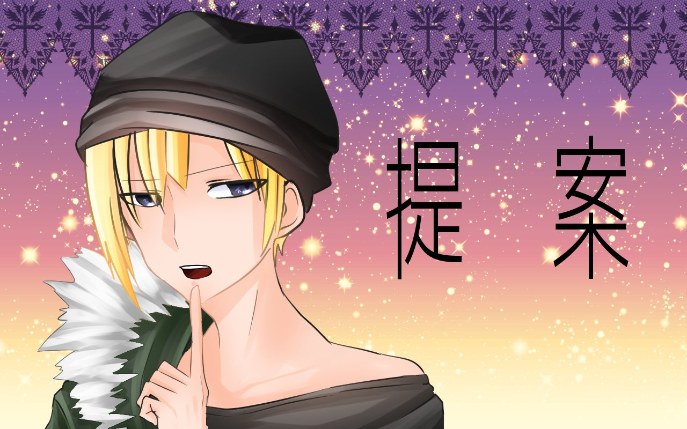
【A-2 反論】アーシャ
確かに私があたりを引いたが、人殺しはしていない。それに女子である私は事件現場である男子寮には入れないのでクロにはなれないはずだ。
【C-1 推理】ナラクーバラ
ドゥルーヴが妹のために事件を起こしたのではないだろうか
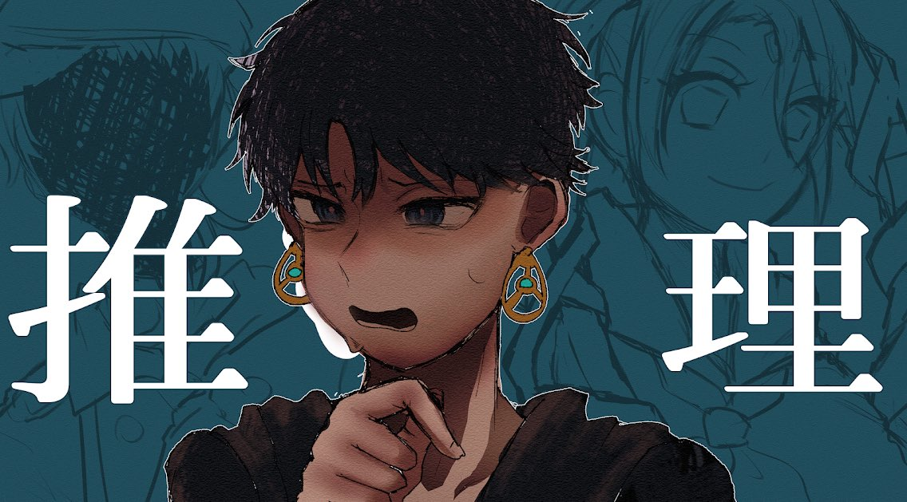
【C-2 反論】ドゥルーヴ
確かに妹のために自分がクロになろうと考えた。でも自分はやっていない。アリバイもある。事件発生時刻は厨房で夕飯の仕込みをしていたので殺害は不可能だ
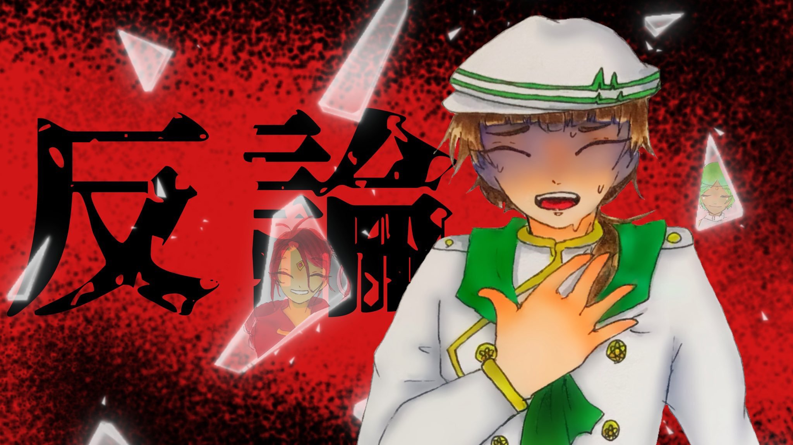
【C-3 同意】コマチ
事件発生時刻、自分は厨房でナンを焼いていた。そのときドゥルーヴも厨房にいてお互いの料理の味見をした。ドゥルーヴのアリバイは確かだ。
【C-4 閃き】アニク
死因によっては事件発生時とされる死亡推定時刻にルドラの部屋にいる必要はないんじゃないだろうか。例えば、あらかじめ毒を盛るとか
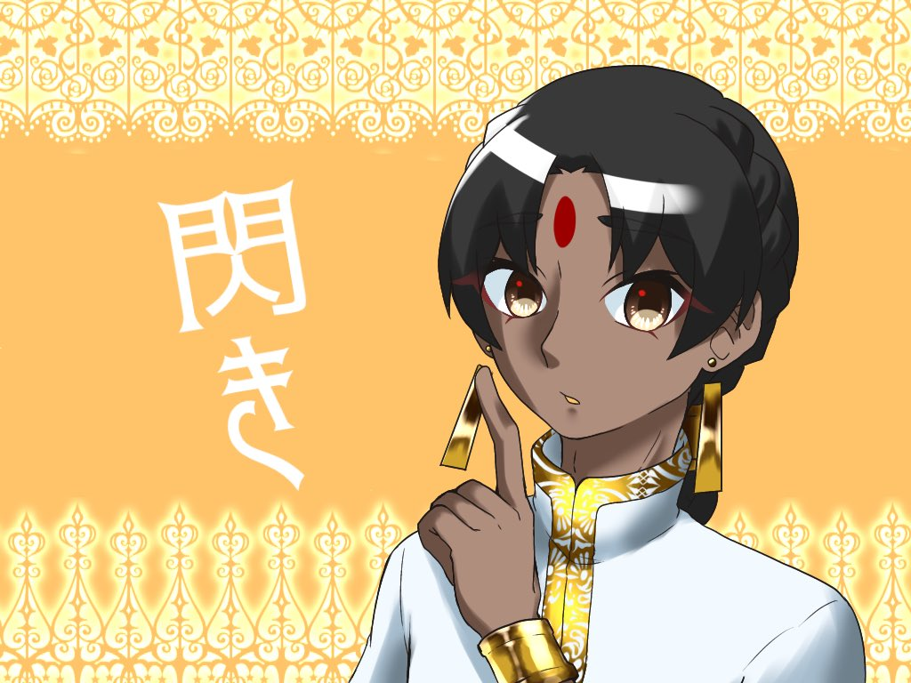
【D-1 コトダマ・保健室1】
薬棚の鍵付きのガラス戸が割れている
【D-2 コトダマ・保健室2】
薬棚に不自然に空いているところがある。誰かが薬品を持ち出したようだ。
【E-1 コトダマ・ルドラの部屋1】
鍵はかかっておらず、電気はついたままになっている
【E-2 コトダマ・ルドラの部屋2】
机の上にコップが２つ置かれている。コップの中には飲みかけのチャイが入っていた。
【E-3 コトダマ・ルドラの部屋3】
ベッドの下に瓶が転がっている。瓶にはラベルがなく、中には薬草らしきものが入っていた。
【E-4 コトダマ・遺体1】
ベッドの上でまるで眠っているように横たわっている
【E-5 コトダマ・遺体2】
衣服は綺麗で外傷はなく、争った形跡は見られない
【F-1 推理】モハメド
ドゥルーヴがルドラに気づかれないように毒物を飲ませて昏睡状態にさせた後、ベッドに寝かせて死ぬまで放置していたのではないか。この方法なら死亡時にそばにいる必要はない
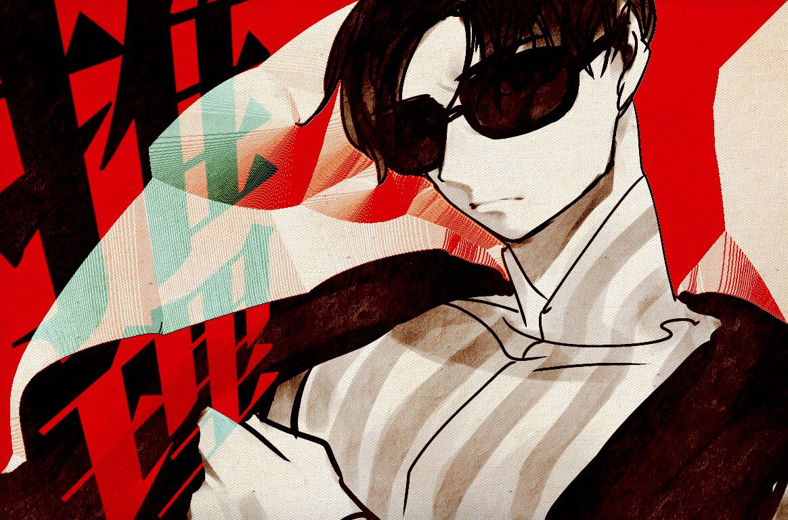
【F-3 同意】 パラヴィ
アーシャは畑で色々な植物を育てていた。その中に毒草もあるかもしれない。彼女が育てた毒草を、ドゥルーヴがなんらかの形でルドラに飲ませることは可能だと思う
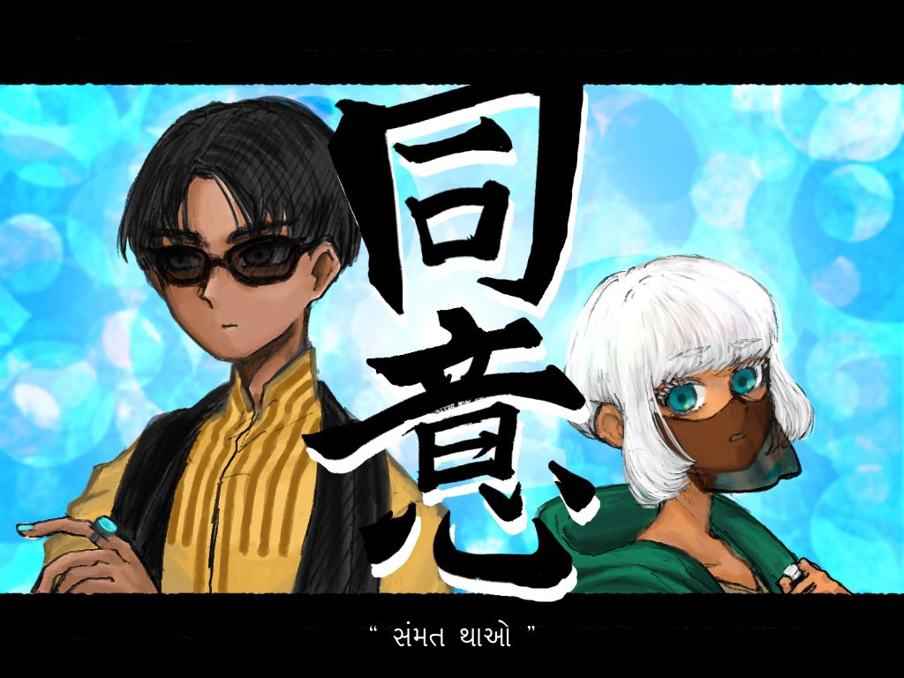
【F-2 反論】ドゥルーヴ
自分とアーシャはスパイスには詳しいが薬草や毒草には通じていない。名前もわからない薬草を使って殺害することはできない。
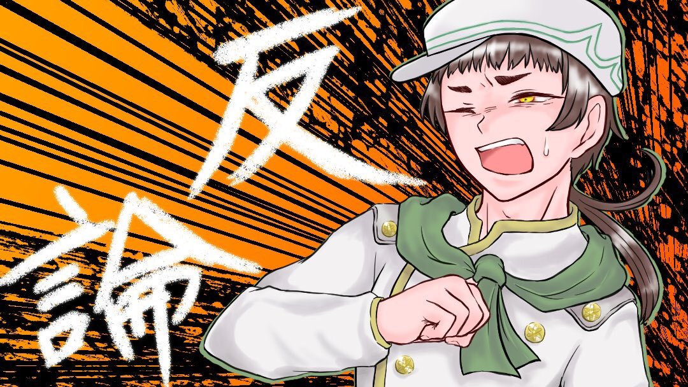
「毒物ですか〜、皆さん心に浮かんでいる人がいるのではないでしょうか？」
「薬草といえばあの人ですネ！名前を口に出してしまっても構いませんヨ！」
【G-1 自白】カマル
自分がルドラを殺したクロで間違いない。彼に気づかれないようにチャイに薬を混ぜて飲ませた。
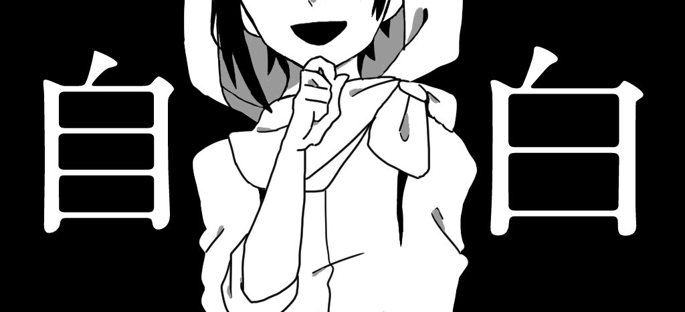
【H-1 疑問】ラーフル
カマルがクロだとして、動機はなんだろうか。『あたり』を引いたわけではなく、ルドラを殺す理由も不明瞭だ。
【I-1 コトダマ・ルドラの秘密】
『ルドラ・シャルマの㊙︎情報！
チャイを拒否されるとショックで一日中寝込んじゃう！ある日パッパが麻薬を配っているのを知ってしまって……まあちょっと色々あって最近は精神安定剤が手放せなくなっているみたいだよ』
【I-2 コトダマ・職員室】
先生の机にルドラの生徒資料が置かれていた。備考欄にはこう書かれている。
『夜と暗闇にトラウマがあり、配慮が必要』
【J-1 コトダマ・焼却炉1】
まだ少し暖かい。つい最近誰かが使ったようだ
【J-2 コトダマ・焼却炉2】
燃え残っていた紙切れを見つけた
『……麻薬…売ってい……』
【J-3 コトダマ・カマルの部屋1】
鍵が開いている。部屋の中は独特な匂いが漂っている。薬草だろうか。
【J-4 コトダマ・カマルの部屋2】
様々な薬草と共に、アヘンの材料となる芥子の実がいくつも置いてあった。
【K-1 推理】エク
ルドラが麻薬を売っているカマルを問い詰め、カマルが口封じのためにルドラを殺害したのではないだろうか
【L-1 疑問】リナ
ルドラが麻薬を売っているカマルを恨んでいたとしたら、彼とチャイを飲むだろうか。それに、薬を混ぜられたチャイはかなり味が変わるはずだ。ルドラが気づかずに飲み続けるとは思えない。
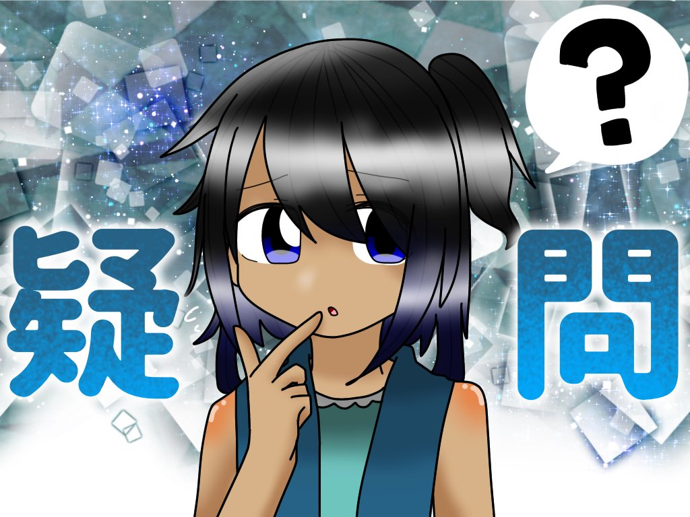
【L-2 証言】ハナコ
ここ数日、ルドラとカマルがとても楽しそうに話しているのを何度も目撃した。カマルがルドラを殺すはずがない。たとえ麻薬のことがあったとしても…
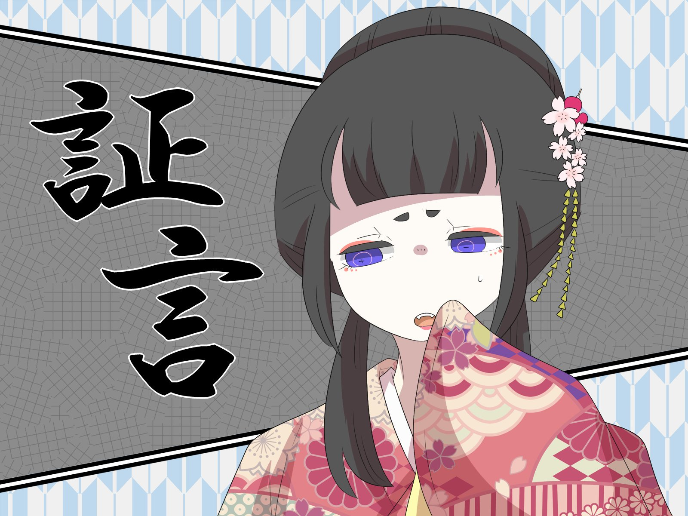
【L-3 推理】クリシュナ
ルドラは自分が死ぬことを受け入れ、彼に協力したのではないだろうか。それに、犯人に関するヒントがあまりにも多すぎる。カマルは自分たちを助けるために、ルドラと手を組んで事件を発生させた上で正しくクロを指摘できるよういくつも証拠を残したのだと思う
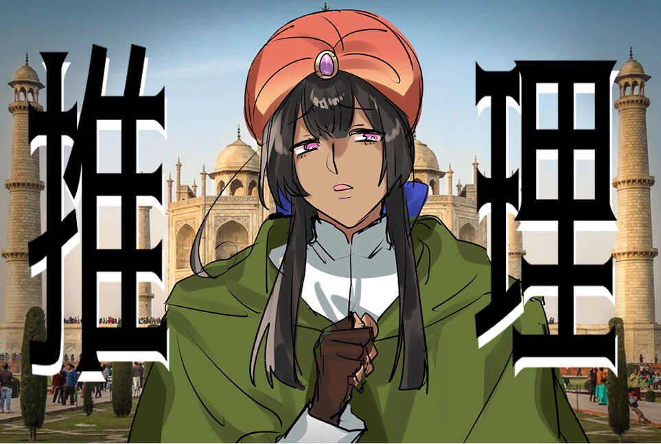
「そうですネそうですネ！ほんとそれなんですよ、困りましたネ」
「人殺しって何か知っていますか？殺意を持って人を殺すことです。シロが死ぬことに承諾していたなんてただの自殺幇助ではないですか」
✦理論武装 開始
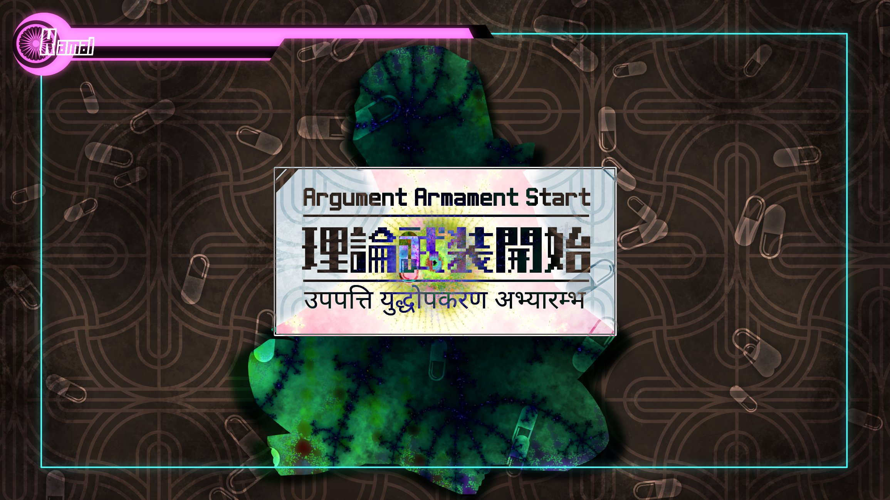
【理論武装1】
「正義感を振りかざして問い詰めてくるあいつが邪魔だったんだよ」
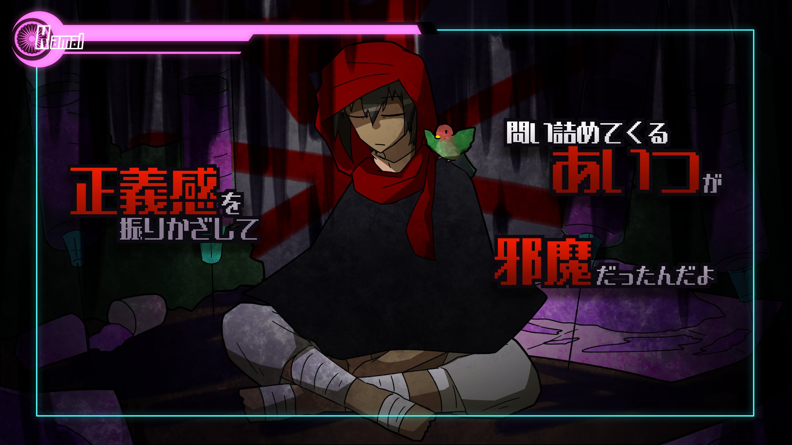
【理論武装2】
「それに、クロになれば卒業できるらしいからな。ちょうどよかったんだ」
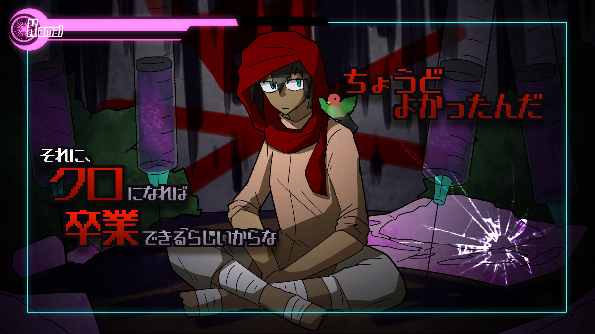
【理論武装3】
「麻薬を売るような人間が他人の命など気にすると思うか？」
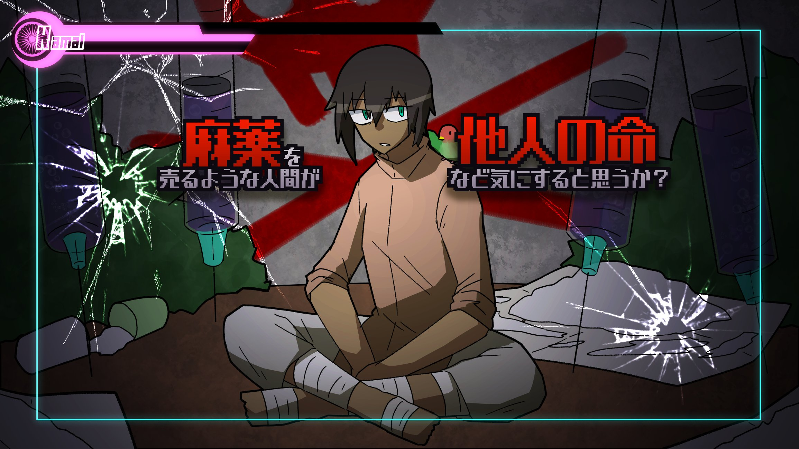
【理論武装4】
「お前らなんてどうでもいいよ」
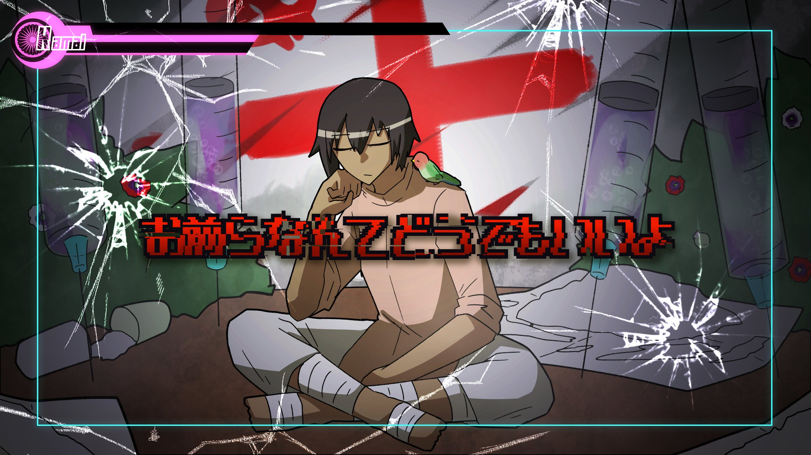
「彼に論破したい人はいますか？」
「こんなにも体を張って、あなたたちのために悪役になろうとしている彼の努力を水の泡にはしたくないでしょう」
「とはいえここまでされたら私も思わず涙してしまいますヨ…なんて健気で優しい心の持ち主でしょう。私も鬼ではありません。ここは特別に……」
「(ごほん、と咳払いして)ここではっきり言ってあげましょう。これは自殺でも自殺幇助でもなく、れっきとしたサツジンです。たとえどんな事情があろうとも。さあ、真実を語りたい方がいれば、どうぞここで発言してくださいネ」
【M-1 論破】アーシャ
カマルは私と兄に人殺しをさせないために、代わりに自分がどうにかすると言ってくれた。自分が事件をおこすことで私たちを救おうとしてくれたんだと思う。どうでもいいと思っているはずがない
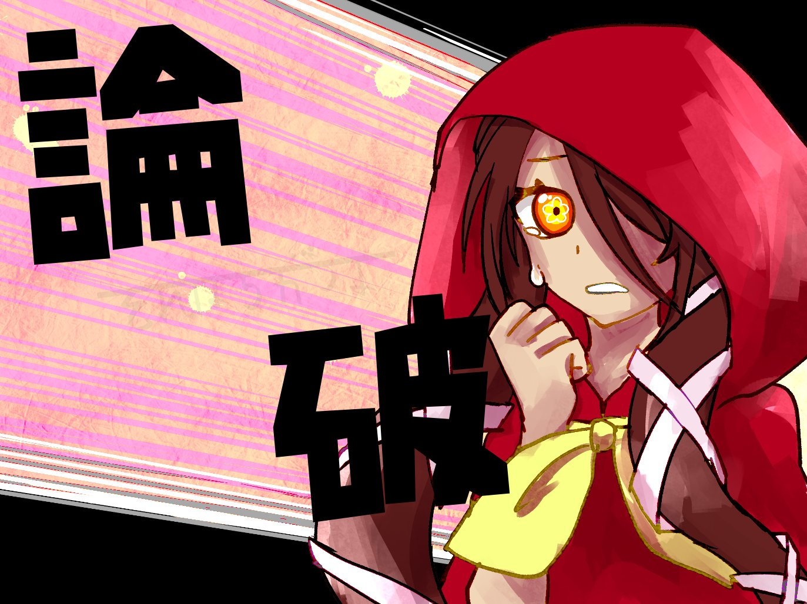
【M-2 論破】ドゥルーヴ
殺人は一人ではできないから、シロになってほしいとルドラに相談したんじゃないか。僕はカマルの優しさもルドラの優しさもよく知っている。殺すのは、とても辛いことだったはずだ
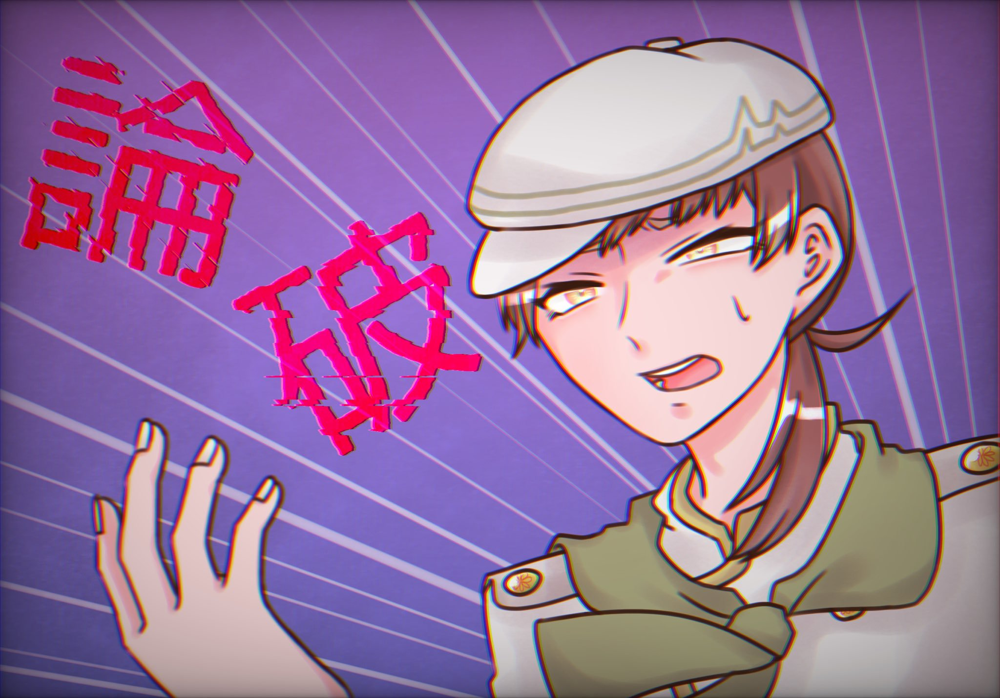
【Break!】
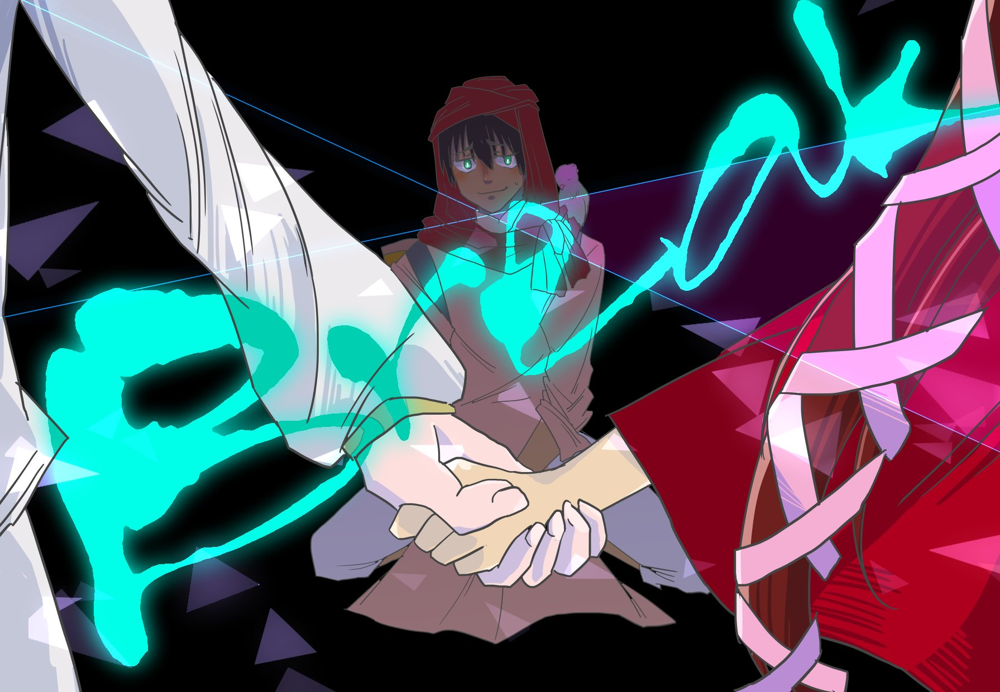
監視カメラの映像
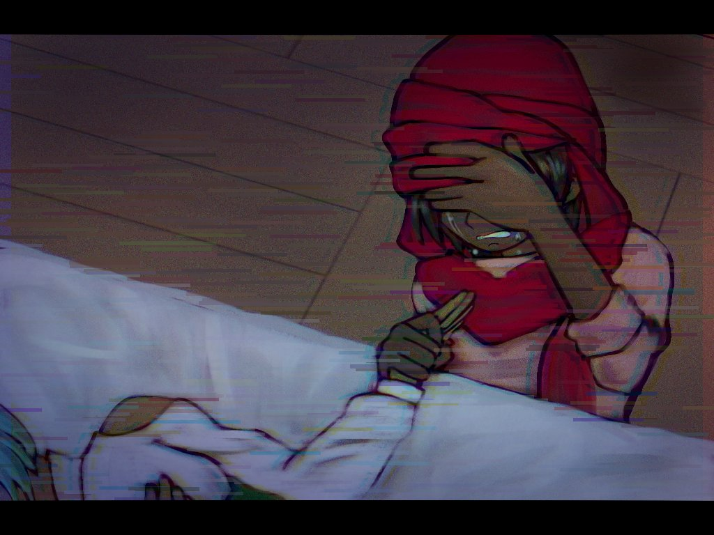